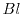
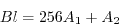
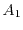
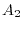
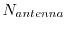

The routines uvread and uvwrite are routines used to read and
write the correlation data (and the associated flagging information).
Here preamble is an array of four double precision elements, data
is an array of n
complex elements, whereas flags is an array of n logical values.
Preamble, data and flags are output from uvread,
whereas they are input to uvwrite. The four elements of
preamble are the u coordinate, v coordinate (measured in nanoseconds),
time (Julian date) and baseline number. The baseline number, , is
calculated as:

where  and  are the numbers of the first and second antennae
respectively (antenna numbers vary from 1 to ). The array
data is used to store the complex correlation data, whereas the logical
values of the array
flags indicate whether the corresponding correlation is
deemed good or bad (true or false, respectively). For uvread, n
limits the number of correlations that can be read; the actual number of
correlations read is passed back as nread. Uvread can perform
a number of additional processing steps - see the description of
uvset (Section 2.5.11).
The flags of a data file can be modified using the uvflgwr subroutine.
When called, the flags associated with the previous call to
uvread and uvwrite are changed to those values given in the
flags array. Using uvflgwr when reading a visibility file,
is the method used to develop flagging tasks. Currently uvflgwr
has the limitation that the linetype is either `channel' or `wide', and that
the `start' and `width' linetype parameters are 1 (see
Section 2.5.11). Also uvflgwr
aborts if no flagging file exists
Miriad manager
2011-08-19